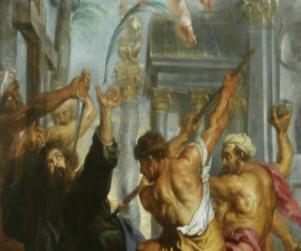
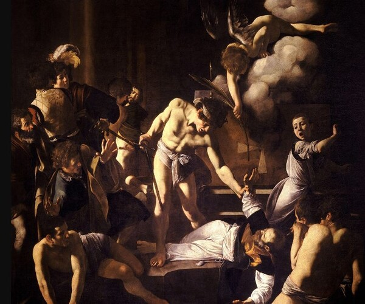

Fear God, Not Man
Behold, I send you forth as sheep in the midst of wolves: be ye therefore wise as serpents, and harmless as doves.
But beware of men: for they will deliver you up to the councils, and they will scourge you in their synagogues;
And ye shall be brought before governors and kings for my sake, for a testimony against them and the Gentiles.
But when they deliver you up, take no thought how or what ye shall speak: for it shall be given you in that same hour what ye shall speak.
For it is not ye that speak, but the Spirit of your Father which speaketh in you.
And the brother shall deliver up the brother to death, and the father the child: and the children shall rise up against their parents, and cause them to be put to death.
And ye shall be hated of all men for my name's sake: but he that endureth to the end shall be saved.
But when they persecute you in this city, flee ye into another: for verily I say unto you, Ye shall not have gone over the cities of Israel, till the Son of man be come.
The disciple is not above his master, nor the servant above his lord.
It is enough for the disciple that he be as his master, and the servant as his lord. If they have called the master of the house Beelzebub, how much more shall they call them of his household?
Matthew 10:26-31
- 
- 